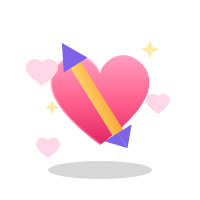
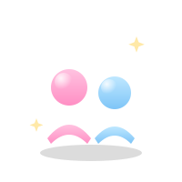
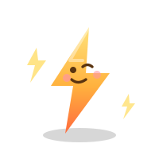
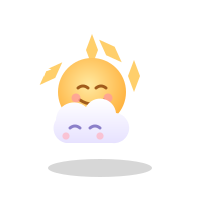

오늘의 한마디 · #쉼
00
오늘 아무것도 안 해도 괜찮아요.
답을 찾지 않아도 괜찮아요.
마음카드 한 장부터 천천히 시작해 보세요.
오늘 아무것도 안 해도 괜찮아요.
지금 이 순간
마음 가까이에

카드 한 장이 건네는 오늘의 힌트
열어보기
관계 속 진짜 내 모습 알아보기
열어보기
내 연결감 지수 확인하기
열어보기
요즘 나를 짓누르는 압박감 체크
열어보기
최근 2주, 마음 일기예보
열어보기
요즘 나를 대하는 방식 체크
열어보기
무기력·방전 지수 확인하기
열어보기
공부·알바·취준으로 지친 마음 체크
열어보기조금 더 이야기하고 싶다면
부천시청소년상담복지센터에는 이야기를 조용히 들어줄 사람이 있습니다.
상담을 결정하지 않아도, 가까운 거점부터 가볍게 둘러보세요.